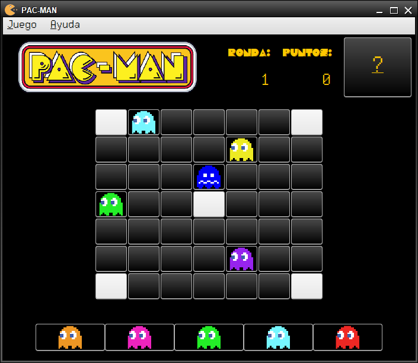

PAC-MAN
Introducción
PAC-MAN es un juego de estretegia basado en el videojuego de los años 80 "PAC-MAN" en el que se trata de evitar la invasión de nuestro tablero de juego
por varios fantasmas durante 10 rondas. Se irán generando 5 personajes por cada ronda y el usuario deberá de agruparlos para que desaparezcan del tablero
de juego evitando la invasión y así ganando la partida. Al finalizar la partida, si el jugador consigue puntos, optará a la selección de premios según el
valor de puntos obtenido.

- Tablero grande: Es el tablero de juego, inicialmente habrá 5 fantasmas ya posicionados.
- Tablero pequeño: Es el tablero en el que se generarán 5 fantasmas por cada ronda. Estos fantasmas
deben de ser colocados por el usuario estratégicamente sobre el tablero de juego para ganar la partida.
- Ronda: Indica un contador del número de ronda en el que se encuentra el jugador en la partida actual.
- Puntos: Indica un contador del número de puntos que el jugador ha obtenido hasta el momento.
- ?: Es un botón que indicará una pequeña explicación del juego para aclarar posibles dudas